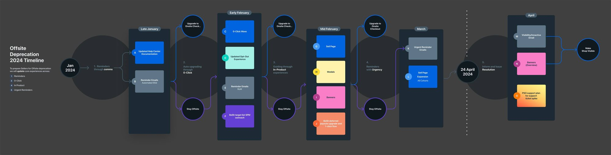
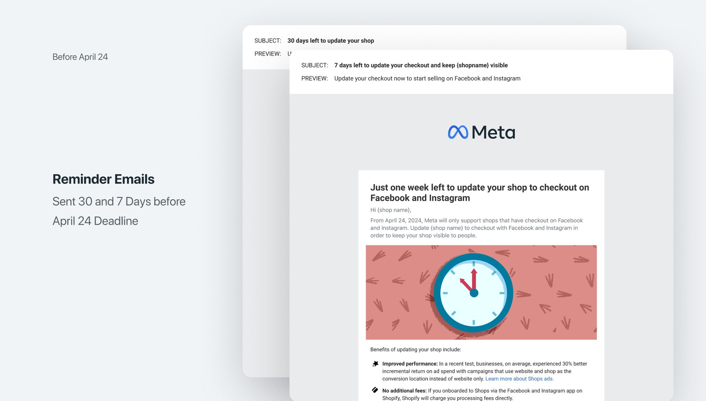
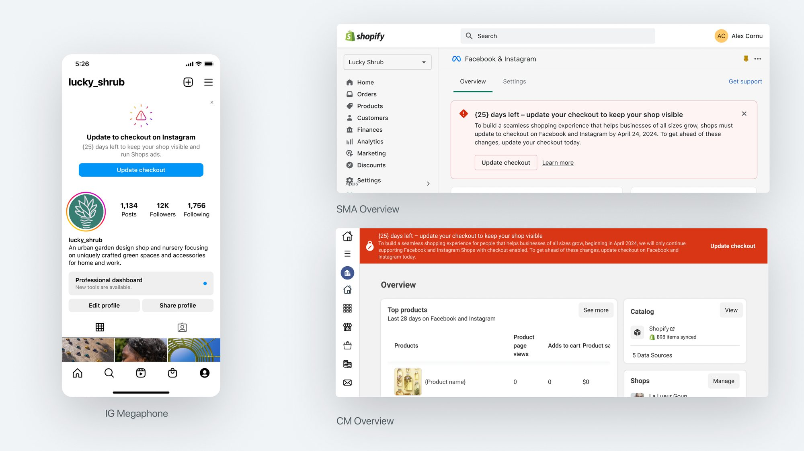
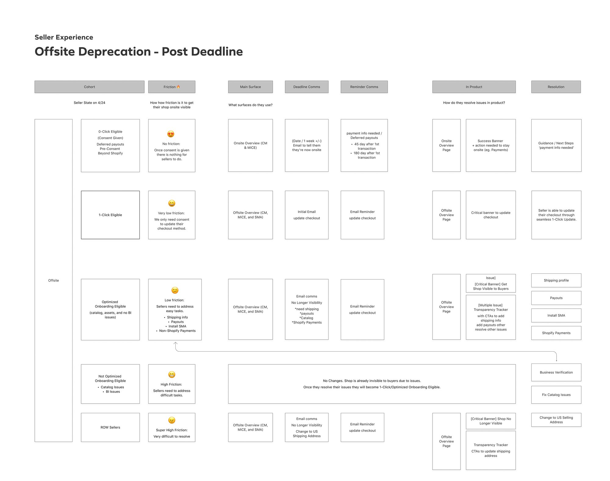
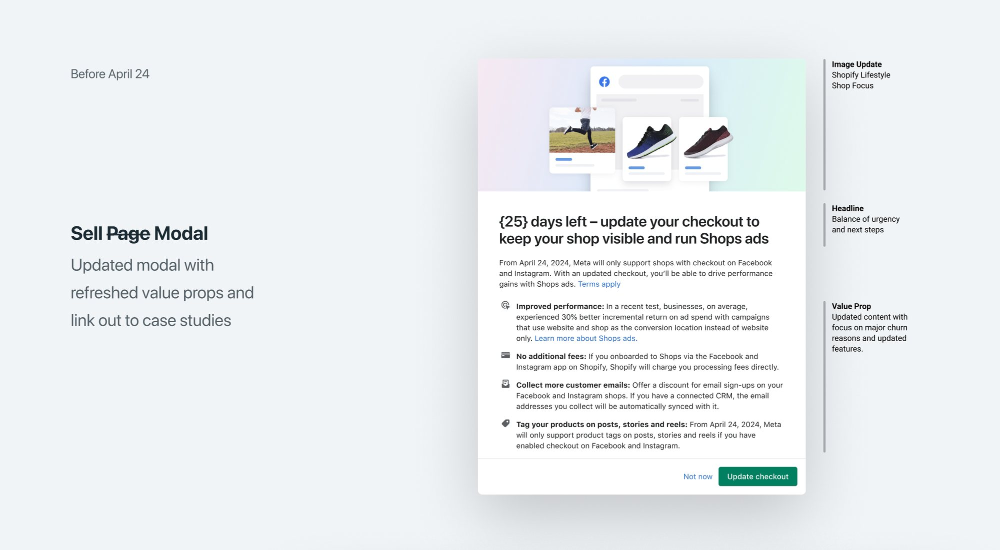
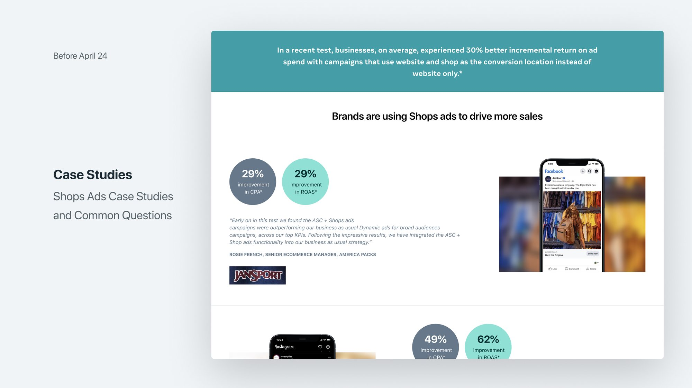
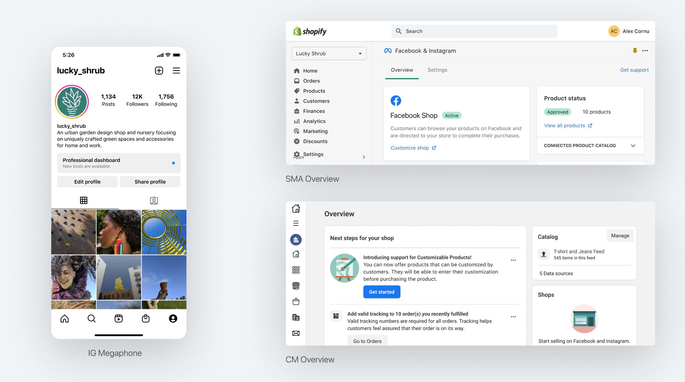

Driving $8B+ growth through offsite-to-onsite checkout migration
As the sole designer for the Shopify Meta App, I led the end-to-end design strategy to transition Shopify’s largest merchants from offsite checkout to onsite checkout without disrupting their existing business operations.
Overview
In 2024, Meta made a strategic shift to deprecate offsite checkout, where buyers who clicked an ad were sent to the seller’s own website to pay, in favour of onsite checkout, where buyers complete their purchase without leaving Facebook or Instagram. Keeping checkout within Meta’s first-party ecosystem gave buyers one seamless journey from ad to collection, product page and checkout. As the sole designer for the Shopify Meta App (SMA), I drove the end-to-end design strategy that moved Meta’s largest Shopify merchants to onsite checkout without disrupting their business.

The Challenge
We were tasked with a Total Addressable Market (TAM) goal of $7.8B. Moving checkout onsite meant asking merchants to change how they sold on Meta, so the main hurdles were reducing friction in the switch, giving merchants clear opt-outs, and removing confusion with a communication strategy for each stage of the deprecation.
- Low conversion: Initially, only 5% of merchants were meeting the eligibility requirements and completing onboarding to set up onsite checkout and run Shops ads.
- Complex ecosystem: The migration touched multiple surfaces, including reminder emails, Help Centre articles and in-product banners across Instagram, Facebook, Meta Ads Manager, Commerce Manager and Meta Business Suite.
- Team transition: I supported 9 engineers through a period of high change after a re-org, including a mid-project Product Manager transition. This meant taking a more active lead in keeping the project’s momentum and scope on track.

Strategic Approach
To manage the scale of the migration, I split our design work into two workstreams.
1. Pre-deadline “levers” (nudges): I led cross-functional workshops to audit the merchant journey. Merchants weren’t ignoring the change; they didn’t understand what losing offsite checkout would mean for their ad performance. We deployed:
- Contextual banners: Clear, jargon-free warnings in the Shopify Meta App.
- Instagram and Facebook AYMT (Are You Missing This?): Native prompts that met sellers where they were already active.

2. Post-deadline “forcing functions”: Details of the post-migration experience to come.

Implementation & Collaboration
Success relied on close collaboration and on acting as the guardian of quality.
- Handling scope creep: I identified gaps in the onboarding logic and set up ad-hoc design syncs to keep engineering aligned when product management support was limited.
- Systematic design: I updated design libraries and Source of Truth (SOT) documents so edge cases, such as different seller segments, were captured and handled consistently across the platform.


Results & Impact
The migration met and exceeded its core business objectives for 2024:
- Market growth: Helped grow the business from $5.5B to $8.2B TAM, exceeding the revised goal by $400M.
- Conversion leap: Onboarding conversion increased from 5% to 24% after the redesign of the flow.
- Deliverability: The ad deliverable rate (the share of ads successfully running) rose from 30% to 52%.
- Adoption: 29% of the overall TAM moved to onsite checkout.

Reflection
This project showed me the value of systems thinking over pure UI design. By auditing the whole ecosystem, from email to app, we moved a large share of Meta’s Shopify merchants through a difficult change to onsite checkout. It also reinforced the value of a design lead who can step in and provide strategic clarity during organisational change.